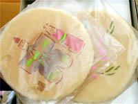

吉岡裕紀は、男として生まれた。
至極当然に、自分の性別など特に気にしたこともなかったし、その必要もなかった。一般の男にしては多少細身であったが、
どこにでもいる普通の男の子だった。周りの男の子たちはすでに二次成長を迎えている子も多く、段々男らしい体つきにな
っていく子もいたが、僕はまだまだ子供のようでよくみんなから「お前はいつになったら男になるんだ？」とか、女子からも、
「裕紀君て女の子みたい」とよくからかわれていた。僕自身はみんなにそういわれても「そのうち男らしくなるさ」と思い、それ
程気に留めることも無かった。
自分の体に異変を感じたのは、ちょうど中学に入る前の春休みの事だった。
「なんだこれ？？」
ある朝起き上がると自分の体がいつもと違うようなきがした。胸が腫れてつっぱり、なんとなく女の子の胸のように膨らんでい
るような・・・。でもそれ程大きい訳でもなく、そのうち腫れも引くだろうと気軽に考えていた。だが一週間経っても腫れが引かな
い。逆に幾分大きくなったような気がする。それほど大きい訳ではないが、何かの病気になったのではないかと気になって親
に打ち明ける事にした。母親もそんな僕を心配し、街の大きな総合病院へ連れて行くことにした。

「ちょっと血液検査をしてみましょう」
「病気かなんかなのでしょうか？」
母親が心配そうに尋ねる。
「いえいえ、そんなに心配することもないでしょう。思春期のお子さんには良くある事で、多少ホルモンバランスが崩れて
いるん
でしょう」
内科の医者は笑って答えた。
僕も母親も安心して、次の検査の結果が出る日を聞いて帰った。
「よかったね、何でもないって」
一週間後、検査の結果を聞きに病院へいくと、医者は神妙な面持ちで思いもしなかった事を告げた。
「お子さんは、どうも半陰陽の疑いがありますね」
「半陰陽！？」
医者の説明では、本来人間は男か女に分かれて生まれてくるのだが、染色体の異常で何千人かに一人はその判別がつき難い
状態で生まれてくる事があるという。普通生まれてくる時には外性器の形で男か女かを判断するが、半陰陽者はその判別が
難
しい場合が多いそうだ。
しかし僕の場合はそんな事もなく、おちんちんもしっかりついていたし当然女の子のも無かった。その時点では全く分から
なかっ
たのだ。
僕はこれまで男として普通に育てられたし、多少女顔だったとはいえ今の今まで自分の性別に疑問すら抱いた事は無かった。
それが急に今更そんな事を言われたって心の準備なんか出来てやいない！
「まさかこの子が女の子だったとでも！？ 先生、裕紀はこれからどうなるのでしょうか？」
母が動揺した声で尋ねた。
「もう少し詳しく検査をしてみなければわかりませんので今の時点では何ともいえません。ただ、治療をしなければ普通の
男性と
して成長出来るかは難しいでしょうね・・・・、しかし今はホルモン療法など治療法がありますのでそれほど悲観的
にならなくても大
丈夫ですよ」
でも僕らには、そんな申し訳程度の慰めの言葉も衝撃が大きすぎて何の足しにもならなかった。
帰り道、電車に揺られながら僕は呆然としてた母親に、
「なーに、死ぬとかそういう訳じゃあないんだから、落ち込まないでよ、お母さん」
と声をかけたが、本当は僕もショックで心がこんがらがったままだった。
後日詳しい検査をした結果、僕の本当の病名は『男性仮性半陰陽』といって、一般的に遺伝子的には男だが、外観上は女性
的
になっていく事が多いという物だそうだ。僕の場合普通の男よりは多少小さいが睾丸だってちゃんとある。普通ははそこ
で男性ホ
ルモンが作られるのだが、僕の場合は逆に女性ホルモンを分泌しているというのだ。要するにこのままほおって置
くと、僕の体は
女性化が確実に進むという事らしい。僕はすっかり混乱してしまった。
「僕、もしかして女の子になっちゃうの？！」
「このまま男性化の治療をしなければその可能性は高いですね。幸いな事に裕紀君はまだ二次成長期前なので、きちんと治
療を
続ければ見た目は普通の男性のようになれるしょう。ただ、一生男性ホルモンを飲み続けなくてはなりませんが・・・」
「そのお薬を飲まなければ、裕紀はどうなるんでしょう？」
「このままですと、おそらく女性化が進んでしまいますね」
それから医者は付け加えた。
「それから残念ですが、半陰陽のお子さんは総じて将来結婚しても子をもうけるという事が非常に難しいという事を頭に入
れておい
て下さい」
僕は結婚とか自分の子供とかはまだまだ先の事だと思っていたが、それでも将来子供が出来ないというのは結構ショックだ った。
「それからもうひとつ、裕紀君の場合睾丸で女性ホルモンが作られている事がわかっております。男性化の治療をする場合
睾丸を
摘出した方が効果は高いです」
僕はびっくりした。
「え〜、キンタマとっちゃうの！？」
母親は真っ赤になって恥ずかしそうにしていたが、自分はそれどころではない。男のシンボルが無くなるかもしれないとい
うのだ。
これは一大事だ。
「そんなぁ」
手術がいやなのと情けないのとでもう泣きそうだった。
その他も色々と半陰陽の事や治療方やらを聞いたのだが、ショックな事が多すぎて頭に何も入らなかった。母親は将来孫を
抱くの
を楽しみだと日頃いっていたので今回は相当きつかったらしい。なんせ僕は一人息子だったので。でもそれどころで
はない、僕の大
切なキンタマが無くなってしまうのだ！ それに男性ホルモンを一生飲み続けねばならないのだから・・・
早速その晩薬を飲んだのだが、このホルモン剤というのがもうとにかく最悪だった。胸がムカムカして吐き気が収まらない
のだ！
どうも僕の体に合わないらしく、結局二日も経たずに薬を飲むのをやめてしまった。
「困りましたねえ、飲まないと治療は難しいです・・・」
医者は本当に困り果てて言った。 だが僕は頑なにその薬を飲む事を拒んだ。だって、あんなに具合が悪くなるなんて思っ
てもみな
かったからだ。
「絶対にいやです！ あんな物を飲むくらいなら男らしくなれなくたっていい！！」
「ホルモン剤は男らしくなるためだけじゃないんだよ。 君の健康のためだ。 人は性ホルモンが足りなくなると体が異常
に疲れ安く
なったり、それから将来若くして更年期障害や骨粗鬆症になったりしやすいんだ」
「でも、あんなに具合が悪くなるなんて耐えられない！ しかも一生飲み続けるなんて絶対無理です！！」
「困ったなあ」と医者。
母が心配そうにいった。
「あの、その薬の変わりはないんでしょうか、もっと弱いのとか」
「残念ですが、あれ以上効力が弱いのとなると殆ど効き目はありません、内服用ではなく注射もありますが成分が同
じなのであ まり
変わらないでしょう、ん〜、弱ったな・・・」
僕は薬を何とか飲まずに済ませたい一心で言った。
「でも、男性ホルモンが無くても僕の体からは女性ホルモンが出ているんでしょう？ それなら性ホルモンが不足すること
は無いは
ずだ！」
「だけどね、それじゃあ君の体は女性化してしまうよ？」
「それでも一生具合が悪いのよりはずっといい！」
僕は本当にあの薬を飲むのがいやだったのだ。本当に耐えられない位吐き気がするから・・・、でもその代償に僕が女性化
してしま
うというのだ。
「う〜ん、しょうがないな、確かにあの薬は君には合わなかったんだと思う、他に代用薬もないし。でも君が自分のことを
男と思ってい
る以上、君の体の女性化は辛い人生になると思うよ？ その覚悟はあるかい？」
「・・・・・・はい」
女性化が何だ、それがどうした！ あの苦しさが無くなるのであれば他のどんな事にも耐えられると、その時はそれほど深
くも考えず
にそう思っていた。
結局僕は薬を飲むのを止めた。その代わり僕は「体の女性化」という代償を背負う事になった。 もうひとつ、睾丸の摘出
という恐ろし
い事体も免れる事も出来たけれど。